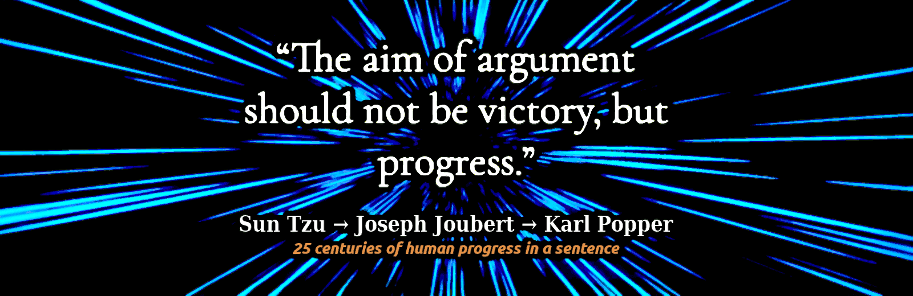

Roberto A. Foglietta
Rationale
Linkedin and beBee articles collected along the time in PDF format. Written and published under the personal brand
Roberto A. Foglietta by Roberto Foglietta since 2016. This collection is presented here because with a certain regularity, usually 4 years, the social accounts are unilaterally deleted or frozen. The author's habit to print in PDF his articles and uploading on several Google Drive accounts made them last through adversities. The personal brand was created a little before 2000, in order to avoid existing and not desirable homonyms.
Data management
One of the benefits of this approach is that a PDF document generated with some difficulty from an article published on LinkedIn is 8 times larger in size than one easily generated with this approach. But it is only the tip of the iceberg, in fact by using a git-oriented approach we have the complete revision control and obviously direct management of the data produced both in terms of availability and in terms of licensing.
The PDFs collection is splitted into two folders
pdf.todo and
pdf.done depending on whether they have already been converted to markdown format or not. Because the purpose of this project is also to revise and give a coherent and cohesive connotation to the collection of writings, not only to collect them in a single repository.
The Internet memory
Internet memory has become a meme, a concept that emerged from the realisation that it is practically impossible to remove information once it has been shared on the Internet. Those who have little or no understanding of this new technology have invented the right to be forgotten more to support the myth of the "rebirth" or more prosaically "
revergination" of politicians or supposed politicians who have been trounced by history even more than by the ballot box. To remove any doubts about the idea of opposing technological modernity, I think one image will suffice.
 Click here to view in full the screenshot
Click here to view in full the screenshot
Most of the two billion Internet users have a cloud drive like this. Many have more than one and each drive keeps a history of documents, their revisions and versions, sometimes even deleted ones as Apple has shown to us. Everyone of these accounts can upload data again in public or share it in public among groups or in private among close friends. Moreover, between any two people chosen from these 2 billion, there are no more than 7 personal connections to reach anyone else on this planet. This means that, in the worst case, a document can travel around the world in 7 days if it is urgent and necessary.
Website
robang74.github.io/roberto-a-foglietta
The website is easier to browse, but not always up to date with the
github project. However, the information presented in the website are more stable and reviewed compared the github project that can be working in progress.
Forum
open discussions forum
This forum is open for debates about documents included into this collection and other topics that may enter into it. You need a github account to post in that discussion forum or alternatively write to me by e-mail.
roberto.foglietta@gmail.com for a direct contact
Index
As PDF documents are converted to markdown, they will be added to this index, in anti-chronological order as the chronological one is present in the file list given the numerical index preceding it in the name. Instead, new articles will be written directly in markdown format. Date of first publication is written in a universal format, like YYYY-MM-DD.
299 - 2025-01-09 - (raw) [IT] [DE] [FR] [ES] - Such a man of Common Sense!
298 - 2025-01-07 - (raw) [EN] [DE] [FR] [ES] - Dietro a quel nome c'è un mondo
297 - 2024-12-21 - (raw) [EN] [DE] [FR] [ES] - Il delirio dei regolatori delle AI
296 - 2024-12-15 - (raw) [EN] [DE] [FR] [ES] - La madre di tutte le guerre
295 - 2024-12-14 - (raw) [EN] [DE] [FR] [ES] - Il cambiamento climatico, questo sconosciuto
294 - 2024-11-27 - (raw) [EN] [DE] [FR] [ES] - Capire è la chiave di volta
293 - 2024-11-03 - (raw) [EN] [DE] [FR] [ES] - Il grande inganno della diversità
292 - 2024-10-13 - (raw) [IT] [DE] [FR] [ES] - Linux, Android & RedFish OS
287 - 2024-09-24 - (raw) [EN] [DE] [FR] [ES] - Zucchero, alimentazione e salute
285 - 2024-09-22 - (raw) [IT] [DE] [FR] [ES] - I wish to be a wolf, accept it
278 - 2024-07-31 - (raw) [IT] [DE] [FR] [ES] - The paper money is financial communism
265 - 2024-06-07 - (raw) [IT] [DE] [FR] [ES] - The BRICS financial system, hope or WW3?
261 - 2024-05-18 - (raw) [EN] [DE] [FR] [ES] - La guerra del dollaro contro l'euro
236 - 2023-12-31 - (raw) [IT] [DE] [FR] [ES] - A post covid pandemic reviewv
090 - 2017-10-13 - (raw) [EN] [DE] [FR] [ES] - L'importanza del TCMO
Yet unconverted articles saved in PDF, and written since December 2015.
001 up to 291, those not listed above - pdf.todo folder
There are two other collections of texts that are worth listing here as they are related to this documentation work. Both of these collections make use, albeit in different ways, of artificial intelligence. In the first, the texts are peer-reviewed with an AI impersonating a collaborative agent-antagonist while in the second, the documents submitted to the AI are merely a dialogue cue to develop interaction with it. The date refers to the first commit.
chatgpt answered prompts source on github (2024-09-06)
chatbots for fun (humor!) source on github (2024-11-17)
Despite the title the first texts collection is not limited to using ChatGPT but also chatbots like Mistral AI have been involved. The title of the project did not change because mainly it still fits and for keeping alive the links previously shared with other people. Moreover, while the first collection has a serious cut, the second is definitely oriented to a humoristic approach even when very serious topics are investigated.
Translations
As much as possible most of the documents presented here will be translated in two languages: Italian and English. The first is the native language of the author and the second is an international idioma. As per thumb rule, PDF and raw markdown text documents can be translated using Google Translation online service. In a single call for each document. Or alternatively using a translation browser plug-in that can offer the translation during the navigation. Almost all documents, but not all, because some documents are obsolete or not so relevant anymore. Hence, some few documents are saved here just for sake of completeness of the backup or for a future reviewing and/or development.
There is a folder that contains few script
tools and you may be interested in a couple of them.
HTML
The shell script
tools/md2html.sh converts the articles in markdown format into HTML pages which are created in the local
html directory when
bash tools/md2html.sh runs on the top directory of the locally cloned repository. The syntax is easy
md2html.sh [-z] [namefile.md] and with
-z creates the zip archive. The
html/default.css is imported and embedded into the created page, to provide a dark theme. Unless the browser can find a local file named
custom.css which can override the default CSS style. This allows users to change the style in a very easy and straightforward way.
PDF
The shell script
html/html2pdf.sh converts the html pages into PDF document. The syntax is easy
html2pdf.sh [-g] [-c|-w] $finame.md and allows to create a PDF also using
pdfcool.css (blushift grayscale) and
pdfwamr.css (redshift grayscale) or a using a pure grayscale based on one of these two. Alternatively, we can use
custom.css, otherwise the PDF will be produced with a black background as html pages have by default.
Warp meme
Sun Tzu in
The Art of War is written that the aim of the war is not winning but creating the conditions for a long lasting peace and at the beginning of that essay, he also wrote that "
The supreme art of war is to subdue the enemy without fighting." which clearly states that is not by violence which can achieved the best. Joseph Joubert quote reports almost an identical concept "
The aim of argument should not be victory, but progress".
Moreover, Karl Popper proposed the falsification principle as a foundation pillar of science, he accepted the same concept, achieve the progress by a constructive confrontation. It is obvious that someone can decide at any moment to use violence to subdue us and this creates the unavoidable need of being ready for defending ourselves. However, as stated by Sun Tzu and elaborated by others in the next 25 centuries, the best way in acting is using the brain in a clever way rather than trusting the brute force only.
Finally, it is worth noticing that Fabrizio De Andrè, already in 1973, was singing: "
Today's intellectuals, tomorrow's idiots, give me back enough brain to serve my hands". Here we are!
Copyright
© 2024, Roberto A. Foglietta <roberto.foglietta@gmail.com>
All the files in this gihub repository are published
Creative Commons Attribution Non-Commercial No-Derivatives 4.0 International license terms (
CC BY-NC-ND 4.0), unless stated differently or not applicable due to a different and previous authorship.
Moreover, if a version of a document included in this repository exists or has existed under different licence terms, the licence terms of the latest version presented here apply. Even when the new licence terms are more restrictive, because permissions for any free content may be revoked at any time at the will of the author, and updating a licence to be more restrictive explicitly implies this will.
Finally, these licensing terms apply to the single document and to the entire collection as a collection, as well.